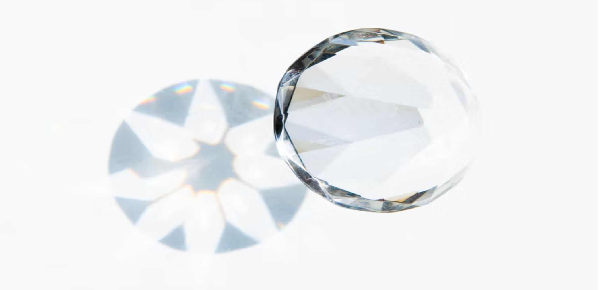
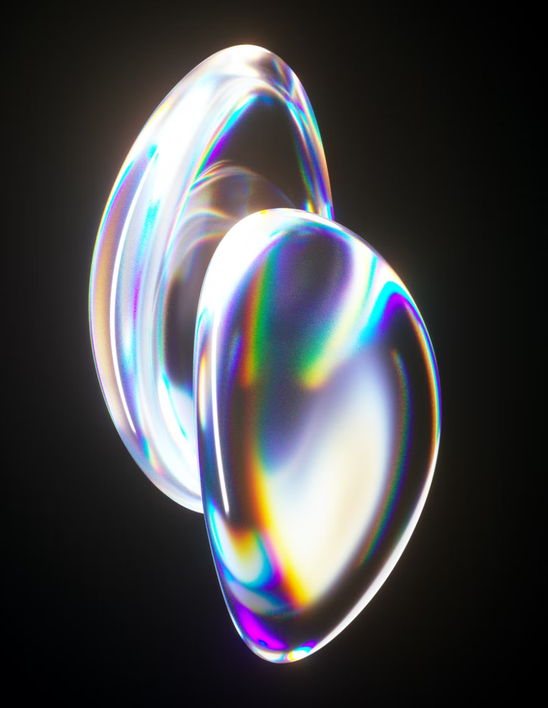
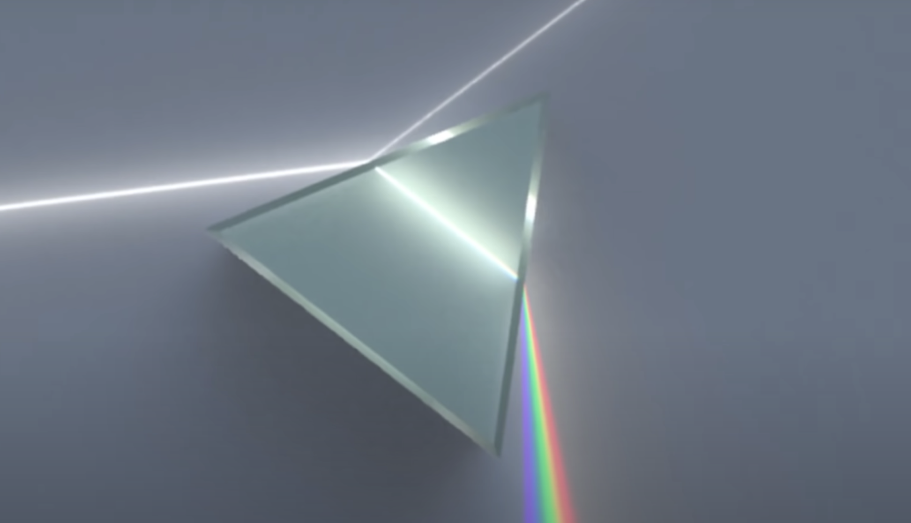
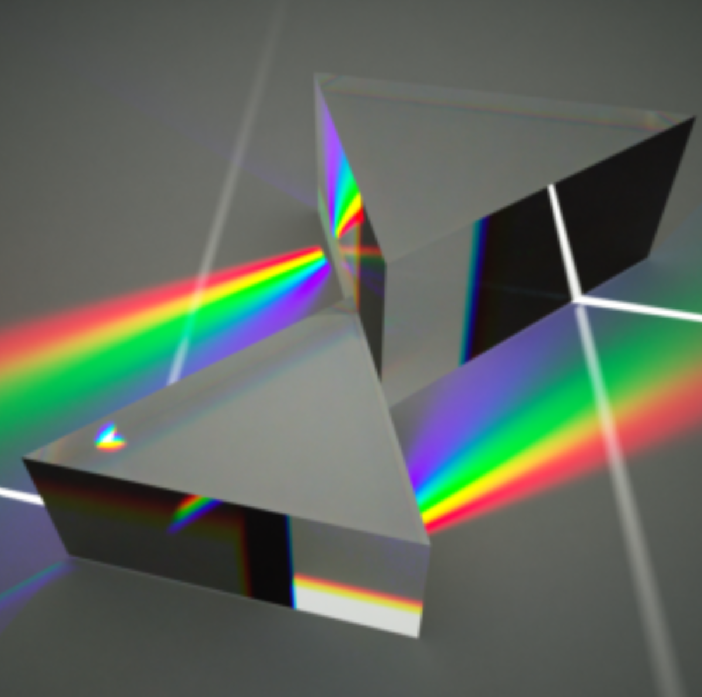

Team Members: Nick Drian, Ruby Werman, Jen Buja and Jake Martin
In this project, we intend to explore methods of light dispersion. This will likely include developing a new continuous color representation that encapsulates all wavelengths of visible light instead of just discrete red green and blue values. We also plan on exploring new types of lighting such as lasers and cone lights and possibly volumetric effects such as fog. Our project will culminate in a virtual rave animation within the classic Cornell Box where lights, dispersive materials, fog, and CAD models all interact.
Our goal is to implement dispersion effects in our raytracer. Dispersion is the separation of visible light into its rainbow components. This effect is essential to creating realistic renders of crystals, gems, and everyday objects such as glasses and water droplets. Implementing dispersion would also increase the color accuracy of our reflectance models. Dispersion is nontrivial to implement because we have to consider multiple paths of a light source (different wavelengths) rather than a cluster of white light. This adds more complexity to path calculations. Our current ray tracing implementation presumes that all light rays consist of three uniform frequencies. However, it doesn’t account for the different angles of refraction for each respective wavelength. Furthermore, we aim to go above and beyond the naive solution of implementing three unique wavelengths by an arbitrary large amount. The goal of this larger number is to implement a representation of the continuous spectrum. One challenge of implementing dispersion is overcoming aliasing and optimizing runtime. We suggest using importance sampling to select the wavelengths from the light sources. We’ll also use Russian roulette to determine path termination.
We will do two rendering passes. First, we will run a ray tracing algorithm on the photo as it is working at the moment. After this has filled the pixel buffer with its final image our program will then run a photon mapping algorithm to overwrite the relevant pixels such that it will add dispersive effects while maintaining the other realistic bsdfs/ effects that our current engine is able to render. Our photon mapping scheme will launch rays from the lights instead of from the camera in order to collect dispersive lighting information.
Our goal is to implement a representation of the continuous visible light spectrum to show off the dispersive properties of materials. In order to have a successful project, we first need a working algorithm that divides white light into 3 discrete vectors of red, green, and blue light. Next, we will experiment with finding the correct number of divisions of white light to represent the spectrum of visible light in a physically accurate way. We plan on being able to successfully render a white light entering a prism, and exiting the prism divided into the visible light spectrum. We will quantify the accuracy of the render by comparing it to real photos of white light being divided up by a prism. We will inspect the quality of division of white light into the visible spectrum, and if the dispersion is showing up in the location we expect it to. If we get ahead of schedule, we plan on rendering a disco ball with a light shining on it. We would also like to be able to render a scene with a dispersive object in fog, where the dispersed light bounces off particles in the fog.
The following images are photographs which exhibit ray dispersion:



The following image is a render which imitates ray dispersion:

Week 1: Implement naive solution with splitting up into 3 rays
Week 2: Implement photon tracer which can do the problem in reverse and also split up ray into more than three different frequencies to further emulate natural dispersion
Week 3: Focus on developing good ways to convert a light spectrum sampled at more than 3 wavelengths into 3 colors such that it is optimized for human eyesight.
Week 4: Focus on producing high quality deliverables which demonstrate the effects which our program will be capable of producing.
Paper 1 Link: "https://graphicsinterface.org/wp-content/uploads/gi1999-7.pdf"
This paper describes a method of rendering called Stratified Wavelength Clustering (SWC) which uses Monte Carlo Rendering. This strategy is useful for rendering spectral caustics and chromatic aberration.
Paper 2 Link: "https://ceciliavision.github.io/graphics/a6/"
This paper describes a method of simulating ray dispersion by separating the ray into more than 3 components upon interseting a refractive surface. This is done in an attempt to further emulate ray dispersion in the real world.